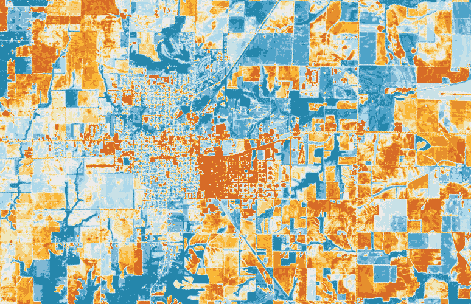

Exporting RasterFrames
While the goal of RasterFrames is to make it as easy as possible to do your geospatial analysis with a single construct, it is helpful to be able to transform it into other representations for various use cases.
Writing to Parquet
It is often useful to write Spark results in a form that is easily reloaded for subsequent analysis. The Parquetcolumnar storage format, native to Spark, is ideal for this. RasterFrames work just like any other DataFrame in this scenario as long as rfInit is called to register the imagery types.
Let’s assume we have a RasterFrame we’ve done some fancy processing on:
import geotrellis.raster.equalization._
val equalizer = udf((t: Tile) => t.equalize())
val equalized = rf.withColumn("equalized", equalizer($"tile"))
scala> equalized.printSchema
root
|-- spatial_key: struct (nullable = true)
| |-- col: integer (nullable = true)
| |-- row: integer (nullable = true)
|-- tile: st_tile (nullable = true)
|-- equalized: st_tile (nullable = true)
scala> equalized.select(aggStats($"tile")).show(false)
+---------+------------------+-----------------+-----------------+------------------+------------------+-------+
|dataCells|mean |median |mode |stddev |zmin |zmax |
+---------+------------------+-----------------+-----------------+------------------+------------------+-------+
|386941 |10160.503048268341|9873.156065074512|7905.780878889613|1816.8022725254104|7351.1446153846155|39158.0|
+---------+------------------+-----------------+-----------------+------------------+------------------+-------+
scala> equalized.select(aggStats($"equalized")).show(false)
+---------+-----------------+------------------+------------------+------------------+-----------------+------------------+
|dataCells|mean |median |mode |stddev |zmin |zmax |
+---------+-----------------+------------------+------------------+------------------+-----------------+------------------+
|458660 |32764.27312170235|32108.424555018057|32403.880728168628|17389.278107855902|333.3304157549235|65296.486725663715|
+---------+-----------------+------------------+------------------+------------------+-----------------+------------------+
We write it out just like any other DataFrame, including the ability to specify partitioning:
val filePath = "/tmp/equalized.parquet"
equalized.select("*", "spatial_key.*").write.partitionBy("col", "row").mode(SaveMode.Overwrite).parquet(filePath)
Let’s confirm partitioning happened as expected:
scala> import java.io.File
import java.io.File
scala> new File(filePath).list
res6: Array[String] = Array(._SUCCESS.crc, _SUCCESS, col=0, col=1, col=2, col=3, col=4, col=5, col=6)
Now we can load the data back in and check it out:
val rf2 = spark.read.parquet(filePath)
scala> rf2.printSchema
root
|-- spatial_key: struct (nullable = true)
| |-- col: integer (nullable = true)
| |-- row: integer (nullable = true)
|-- tile: st_tile (nullable = true)
|-- equalized: st_tile (nullable = true)
|-- col: integer (nullable = true)
|-- row: integer (nullable = true)
scala> equalized.select(aggStats($"tile")).show(false)
+---------+------------------+-----------------+-----------------+------------------+------------------+-------+
|dataCells|mean |median |mode |stddev |zmin |zmax |
+---------+------------------+-----------------+-----------------+------------------+------------------+-------+
|386941 |10160.503048268341|9873.156065074512|7905.780878889613|1816.8022725254104|7351.1446153846155|39158.0|
+---------+------------------+-----------------+-----------------+------------------+------------------+-------+
scala> equalized.select(aggStats($"equalized")).show(false)
+---------+-----------------+------------------+------------------+------------------+-----------------+------------------+
|dataCells|mean |median |mode |stddev |zmin |zmax |
+---------+-----------------+------------------+------------------+------------------+-----------------+------------------+
|458660 |32764.27312170235|32108.424555018057|32403.880728168628|17389.278107855902|333.3304157549235|65296.486725663715|
+---------+-----------------+------------------+------------------+------------------+-----------------+------------------+
Converting to RDD and TileLayerRDD
Since a RasterFrame is just a DataFrame with extra metadata, the method DataFrame.rdd is available for simple conversion back to RDD space. The type returned by .rdd is dependent upon how you select it.
scala> import scala.reflect.runtime.universe._
import scala.reflect.runtime.universe._
scala> def showType[T: TypeTag](t: T) = println(implicitly[TypeTag[T]].tpe.toString)
showType: [T](t: T)(implicit evidence$1: reflect.runtime.universe.TypeTag[T])Unit
scala> showType(rf.rdd)
org.apache.spark.rdd.RDD[org.apache.spark.sql.Row]
scala> showType(rf.select(rf.spatialKeyColumn, $"tile".as[Tile]).rdd)
org.apache.spark.rdd.RDD[(geotrellis.spark.SpatialKey, geotrellis.raster.Tile)]
scala> showType(rf.select(rf.spatialKeyColumn, $"tile").as[(SpatialKey, Tile)].rdd)
org.apache.spark.rdd.RDD[(geotrellis.spark.SpatialKey, geotrellis.raster.Tile)]
If your goal convert a single tile column with its spatial key back to a TileLayerRDD[K], then there’s an additional extension method on RasterFrame called toTileLayerRDD, which preserves the tile layer metadata, enhancing interoperation with GeoTrellis RDD extension methods.
scala> showType(rf.toTileLayerRDD($"tile".as[Tile]))
scala.util.Either[org.apache.spark.rdd.RDD[(geotrellis.spark.SpatialKey, geotrellis.raster.Tile)] with geotrellis.spark.Metadata[geotrellis.spark.TileLayerMetadata[geotrellis.spark.SpatialKey]],org.apache.spark.rdd.RDD[(geotrellis.spark.SpaceTimeKey, geotrellis.raster.Tile)] with geotrellis.spark.Metadata[geotrellis.spark.TileLayerMetadata[geotrellis.spark.SpaceTimeKey]]]
Exporting a Raster
For the purposes of debugging, the RasterFrame tiles can be reassembled back into a raster for viewing. However, keep in mind that this will download all the data to the driver, and reassemble it in-memory. So it’s not appropriate for very large coverages.
val image = rf.toRaster($"tile", 774, 500)
val colors = ColorMap.fromQuantileBreaks(image.tile.histogram, ColorRamps.BlueToOrange)
image.tile.color(colors).renderPng().write("target/scala-2.11/tut/rf-raster.png")
